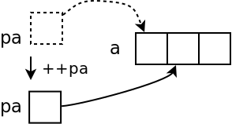
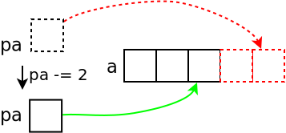

Standard Template Library: Basics#
Containers, Iterators, Algorithms#
Genius Combination of …
Operator overloading (
->,*,+,+=,++)Abstract containers
Abstract algorithms
… based upon pointer arithmetic!
⟶ Pointer arithmetic, revisited …
Blahblah#
Pointer and array index
|


Pointer Increment and Decrement#
Pointer Increment int *pa = a;
++pa;
|
 |
Pointer Decrement int *pa = &a[1];
--pa;
|

|
{kind=link}
Out Of Range Errors (The Spirit Of C)#
Pointers don’t necessarily point to valid memory locations …
*pa = a + 4;
pa -= 2;
i = *pa; /* ok */
|
 |
*pa = a - 1;
pa += 2;
i = *pa; /* ok */
|

|
{kind=link}
Pointer Difference#
How many array elements are there between two pointers?
p = &a[0];
q = &a[2];
num = q - p; /* 2 */
|

|
General practice (“The Spirit of C”): [1]
Beginning of an array (a set of elements) is a pointer to the first element
End is pointer past the last element
Step Width? (1)#
So far: pointer to int - how about different datatypes?
⟶ same!
pointer + n: points to the n-th array element from pointer
Type system knows about sizes
Pointer knows the type of the data it points to
Careful with
voidandvoid*
Step Width? (2)#
struct point
{
int x, y;
};
struct point points[3], *begin, *end;
begin = points;
end = points + sizeof(points)/sizeof(struct point);
while (begin < end) {
...
++begin;
}
And Arbitrary Data Types?#
sizeof: size (in bytes) of a type or variable sizeof(int)
sizeof(struct point)
sizeof(i)
sizeof(pi)
sizeof(pp)
|

|
Enter Algorithms (On Good Old C Arrays)#
Iteration over all elements of an array
begin: pointer to first element, inclusiveend: pointer past last element, exclusive⟶ range
[begin, end)
int sum(const int *begin, const int *end)
{
int sum = 0;
while (begin < end)
sum += *begin++; /* precedence? what? */
return sum;
}
void copy(const int *src_begin, const int *src_end, int *dst_begin)
{
while (src_begin != src_end)
*dst_begin++ = *src_begin++;
}

|
Pretty, isn’t it? |
STL Algorithms#
#include <algorithm>Many general purpose algorithms
One of the simplest:
std::copy<>()
STL Containers#
Container
Extremely practical collection of template classes
Sequential container ⟶ array, list
Associative containers
Footnotes